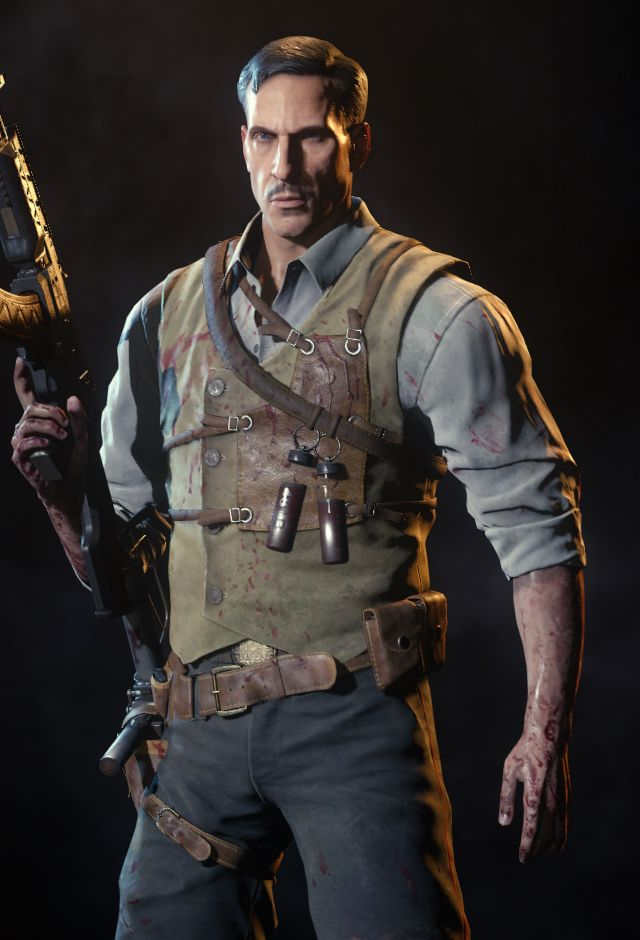

El Doctor Edward Richtofen es un personaje jugable cuya profesión principal es ser científico que forma parte del movimiento nazi, es un personaje jugable la historia de Zombies, siendo a la vez el ex antagonista. La voz de Richthofen aparece en Call of Duty: Black Ops II en todos los mapas que figuran en el futuro, mientras que hace un acto de presencia, con carácter retroactivo en Origins.